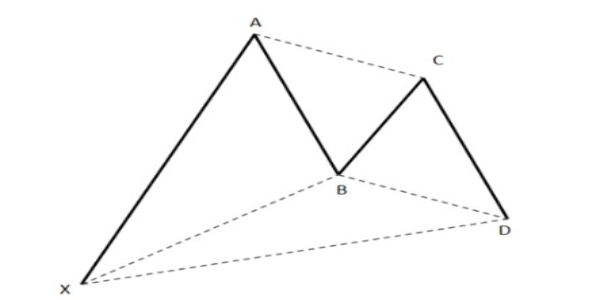

El padre del "Trading armonico"
Harold Gartley nació en Newark, Nueva Jersey en 1899. Gartley recibió su Licenciatura en Ciencias Comerciales y una Maestría en Administración de Empresas de la Universidad de Nueva York. Con los años trabajó en Wall Street como un miembro de la junta, corredor, corredor, analista, asesor financiero y educador. Viajó para dar conferencias sobre el tema del análisis técnico y enseñó en privado a muchos comerciantes prominentes de Wall Street en ese momento.
El curso de análisis técnico de Gartley finalmente se convirtió en una carpeta de tres anillos que se publicó en 1935 y se tituló "Beneficios en el mercado de valores". Originalmente se vendieron menos de 1000 copias. Sin embargo, el precio de venta del curso era alto en ese momento. ¡El curso de Gartley se vendía por $ 1500 en 1935, o el equivalente de tres autos Ford! Es sorprendente pensar que podría vender CUALQUIERA de estos cursos a un precio tan elevado en medio de la Gran Depresión en los Estados Unidos.
Gartley escribió muchos artículos sobre el mercado de valores, pero "Ganancias en el mercado de valores" se considera su mejor trabajo. El libro original se ha convertido en un clásico de análisis técnico y en un artículo de colección.
El libro las “ganancias en el mercado de valores” cubren una amplia gama de temas que incluyen tendencias, teoría de Dow, triángulos, promedios móviles y brechas. Se dice que Gartley ha trabajado más en el tema del análisis de volumen en el mercado de valores que nadie. Cubre una serie de patrones diferentes en el libro, pero pasa más tiempo en un patrón que en todos los demás. Este patrón particular se discute en detalle en la página 222 y hoy se conoce como el patrón de Gartley.
Gartley fue uno de los fundadores de la Sociedad de Analistas de Seguridad de Nueva York y, desde 1947 hasta su jubilación en 1969, trabajó en el campo de las relaciones públicas financieras. Harold M. Gartley falleció en 1972 a la edad de 73 años.

El patrón de Gartley 222
El Gartley 222 es la madre de todos los patrones armónicos. Harold M. Gartley lo presentó en su libro publicado en 1935 “Beneficios en el mercado de valores”, el cual en su forma original era un patrón extremadamente lucrativo.
Su estructura está compuesta por 4 piernas (movimientos) donde las 3 últimas forman una patrón AB=CD. El patrón Gartley comienza con un movimiento impulsivo generalmente en la dirección de la tendencia para luego formar una corrección compleja en forma de AB=CD y completar el patrón dando una señal de entrada a favor de la tendencia.
Un patrón con la estructura como se muestra en la imagen puede ser llamado patrón de Gartley si se ajusta a las siguientes reglas:
- El punto D no puede exceder al punto X.
- El punto C no puede exceder el punto A
- El punto B no puede exceder el Punto X
Otro autor unánimemente reconocido en la disciplina es Scott Carney. Aparte de seguir perfeccionando el patrón Garley, Carney definió nuevos patrones armónicos tales como el Murciélago (Bat), Tiburón (Shark), Cangrejo (Scrab) y el 5-0. Este autor llevó la teoría del trading armónico a un nivel superior, definiendo multitud de aspectos relacionados con la operativa práctica.
Patrón de Gartley alcista

Patrón de Gartley bajista

Combinación de geometría y números de Fibonacci
El trading armónico combina patrones y matemáticas (números de Fibonacci) en un método de negociación que es preciso y basado en la premisa de que los patrones de precios se repiten. En la base de esta metodología está la relación primaria, o algún derivado de la misma (0.618 o 1.618). Las relaciones complementarias incluyen: 0,382, 0,50, 1,41, 2,0, 2,24, 2,618, 3,14 y 3,618.
Mediante la búsqueda de patrones de diferentes longitudes y magnitudes, el inversor puede entonces aplicar las relaciones de Fibonacci a los patrones y tratar de predecir los movimientos futuros. Este método de negociación se atribuye en gran medida a Scott Carney, aunque otros han contribuido o han encontrado patrones y niveles que mejoran el rendimiento.
Derivaciones de los números de Fibonacci
Los números de Fibonacci utilizados en el trading armónico derivan directa e indirectamente de las relaciones primarias 0.618 y 1.618 de la secuencia de Fibonacci. Aunque otros traders y analistas pueden utilizar distintas relaciones porcentuales, la siguiente lista comprende las únicas relaciones o ratios que determinan patrones armónicos precisos.Relaciones primarias:
0.618 y 1.618 (de la secuencia de números de Fibonacci).
Relaciones primarias derivadas:
0.786 = raíz cuadrada de 0.618
0.886 = raíz cuarta de 0.618
1.13 = el inverso de 0.886 (1/0.886)
1.27 = el inverso de 0.786 (1/0.786)
Trading Patrones Armónicos y PRZ
Los patrones armónicos se definen mediante estructuras de precios específicas y se cuantifican mediante cálculos de Fibonacci. Estos patrones representan estructuras de precios que contienen combinaciones de retrocesos y proyecciones de Fibonacci distintos y consecutivos.Si calculamos varios aspectos de Fibonacci de una estructura de precios específica, podemos identificar áreas de patrones armónicos que sugerirán puntos de reversion potenciales en la acción del precio .
Scott M. Carney ha identificado esos puntos de inversión como las Zonas de Reversión Potencial (PRZ) . Un PRZ bien definido, generalmente proporciona algún tipo de reacción inicial durante la primera prueba de la mayoría de los patrones armónicos.

Los patrones armónico
El trading armónico es la evolucion moderna del estudio del partron Gartley, cuyo nombre le hace homenaje a su creador HM Gartley, quien los definió en 1932.
Los diseños del trading armonico fueron rescritos posteriormente por Scott Carney y Larry Pesavento, queines descubrieron que hay formaciones de reversion y de continuación que especifican el posible movimiento de los precios, a estos nuevos patrones descubiertos se les coloco nombre de animales para simplificar su aprendizaje quedando identificados de la siguiente manera: Mariposa, Cangrejo, Murciélago y Tiburón; Tambien se modernizó el analisis de los patrones ya existentes como el AB=CD y el mismísimo patrón Gartley.
Los patrones armónicos de precios elevan el concepto establecido en el patron original Gartley a un nuevo nivel mediante el uso de los números de Fibonacci para definir puntos de inflexión precisos en el mercado. A diferencia de otros métodos de negociación, el trading armónico intenta predecir los movimientos futuros de los precios con mayor precisión con base en una serie de relaciones numéricas. Este concepto presenta un gran contraste con los métodos comunes y más populares que son reaccionarios y no predictivos ante la acción del precio. Es ahí donde reside la novedad y popularidad creciente del trading armónico.
¿Qué es el trading armónico?
El trading armónico es una metodología que utiliza el reconocimiento de patrones de precios específicos y la alineación de relaciones de Fibonacci exactas para determinar puntos de alta probabilidad de cambios de tendencia en los mercados financieros. Este enfoque asume que los patrones o ciclos en los mercados, tal como muchos patrones y ciclos en la vida, se repiten así mismos de manera regular. La clave está en la identificación de estos patrones, y la apertura o cierre de una posición con base en una alta probabilidad de que la misma acción del precio histórica va a volver a ocurrir.Aunque estos patrones no son 100% seguros (nada en el trading lo es), son formaciones de precios que han sido probadas históricamente con éxito. Si estas pautas son identificadas correctamente, es posible descubrir oportunidades significativas con un riesgo bastante limitado.

Patrón Armónico ABCD
El patrón ABCD es una formación de inversión del precio que ayuda a identificar los momentos en que el mercado está a punto de cambiar de dirección. Es uno de los patrones armónicos clásicos , y uno de los primeros en ser identificados (fue descubierto originalmente por H.M Gartley). La idea detrás de este patrón es que se puede comprar cuando los precios son bajos y están a punto de subir (versión alcista del patrón), o vender cuando los precios son altos pero están a punto de caer.
El patrón armónico ABCD está formado por 4 puntos denominados A, B, C y D. Estos puntos definen un estilo o patrón repetitivo de movimiento del precio en el mercado el cual puede encontrarse en todos (o en casi todos) los marcos de tiempo y en todos (o casi todos) los mercados.
Hay tres tipos de patrones ABCD segun la proyeccion Fibbonaci:
Ten en cuenta que un retroceso del 61.8% en el punto C tiende a dar como resultado una proyección del 161.8% de BC, mientras que un retroceso del 78.6% en el punto C conducirá a la proyección del 127%.
Cómo operar:
El punto D es el disparador para comprar o vender en un patrón ABCD. Observa que el punto D es una potencial zona de reversión. Los traders necesitarán una confirmación de una reversión real en esta área. La confirmación puede venir en forma de un patrón de reversión de velas, algun soporte, el fin de una onda de elliot o de lecturas de indicadores técnicos.Take Profit:
TP1: Retroceso del 38.2% de AD.TP2: Retroceso del 61.8% de AD.
TP3: Punto A.
Recomendamos utilizar estos niveles junto con el soporte y la resistencia que identifiques en el gráfico utilizando diversas herramientas de análisis técnico. No olvides revisar las temporalidades mayores cuando busques niveles de soporte y resistencia.
Si el precio se ha movido a TP1 rápidamente, lo más probable es que continúe hacia TP2. De lo contrario, si el precio ha sido lento para llegar a TP1, esto podría significar que será el único nivel de TP que obtendrás.
Hay muchos casos en que el mercado se ha revertido después de que el patrón AC=CD ha ido más allá del punto A.
Stop Loss:
En cuanto al Stop Loss, no hay recomendaciones especiales. Puedes colocar un Stop Loss en línea con tus reglas de gestión de riesgos.Consideraciones:
Puedes encontrar muchos patrones ABCD en un gráfico. Las reglas para el trading de cada uno de ellos son las explicadas anteriormente. Asegúrate de saber cómo aplicar las herramientas de Fibonacci correctamente y sigue todos nuestros consejos.Patrón Armónico ABCD alcista


Patrón Armónico ABCD bajista

Puntos de compra-venta patron ABCD
El patrón de Gartley
El patrón de Gartley es el patrón armónico más antiguo reconocido. Fue desarrollado y nombrado por el mismo H.M. Gartley. Sin embargo, Gartley no hizo mención a los ratios de Fibonacci para el patrón. Los niveles de Fibonacci fueron agregados después por Scott Carney y Larry Pesavento.
Los patrones de Gartley incluyen el patrón básico ABCD que está precedido por un máximo o mínimo significativo. Así, el patrón de Gartley está formado por 4 swings del precio. El patrón alcista de Gartley parece similar a una letra M, mientras que el bajista se parece a una W. Las letras para marcar un patrón de Gartley en la tabla son XABCD. La línea XA debe ser la línea más larga del patrón.
Estudiemos el patrón alcista de Gartley (el bajista es su espejo).
Todo comienza en el punto X que puede ser encontrado en una temporalidad mayor y ser parte de una tendencia más grande. Es un mínimo/máximo que es muy distinto y evidente para todos los que están mirando el gráfico. Luego, el precio sube de X a A y hace reversión en A. La pata XA limita el alcance del patrón, y sus otras patas deberían desarrollarse dentro de estos puntos.
- El punto B está en el 61.8% de retroceso de XA. Esta es la condición más importante.
- El punto C puede estar en el 38.2% -88.6% de retroceso de AB.
- El punto D se puede encontrar en la extensión 127.2% -161.8% de AB o en el retroceso de 78.6% de XA.
Cómo operar:
El punto D es el disparador para comprar en un patrón alcista de Gartley. Observa que el punto D es una potencial zona de reversión. Los traders necesitarán una confirmación de una reversión real en esta área. La confirmación puede venir en forma de un patrón de reversión de velas o de lecturas de indicadores técnicos.Take Profit:
TP1: 61.8% de CD.TP2: el tamaño de XA proyectado desde D.
Stop Loss:
Se puede colocar un Stop Loss debajo de X para un Gartley alcista (arriba de X para un Gartley bajista) o según tus reglas de gestión de riesgos.Consideraciones:
Ten en cuenta que en la vida real, los patrones que se encuentran en los gráficos a menudo no se ajustan perfectamente a los ratios enumerados anteriormente. Como resultado, cuanto mayor sea la diferencia entre el patrón de Gartley del libro de texto y el patrón que deseas operar, debe tenerse en cuenta el mayor riesgo de error.El patrón armónico Butterfly (Mariposa)
El patrón Mariposa es otra forma de patrones de Gartley. Fue descubierto por Bryce Gilmore y Larry Pesavento. Este patrón generalmente se forma cerca de los mínimos y máximos extremos del mercado y predice una reversión.
La principal característica especial del patrón Mariposa es que CD se extiende más allá de XA.
- El punto B está en hasta un 78.6% de retroceso de XA.
- El punto C puede estar en el 38.2%-88.6% de retroceso de AB.
- El punto D se puede encontrar en la extensión de 161.8%-261.8% de AB o en la extensión de 127.2%-161.8% de XA. La diferencia con un patrón de Gartley es que D no está en el retroceso de XA sino en su extensión.
Cómo operar:
La entrada se encuentra en el punto D, que es una potencial zona de reversión. Los traders necesitarán una confirmación de una reversión real en esta área. La confirmación puede venir en forma de un patrón de reversión de velas o de lecturas de indicadores técnicos.Take Profit:
TP1: 61.8% de CD.TP2: 127.2% de CDde CD.
Otra: También puedes apuntar a los puntos B (un enfoque conservador) y A (un enfoque agresivo).
Stop Loss:
Se puede colocar un Stop Loss debajo de X para un Butterfly alcista (arriba de X para un Butterfly bajista) o según tus reglas de gestión de riesgos.Consideraciones:
Ten en cuenta que en la vida real, los patrones que se encuentran en los gráficos a menudo no se ajustan perfectamente a los ratios enumerados anteriormente. Como resultado, cuanto mayor sea la diferencia entre el patrón de Butterfly del libro de texto y el patrón que deseas operar, debe tenerse en cuenta el mayor riesgo de error.Hombro Cabeza Hombro - Patron Bajista
La formación de Hombro-Cabeza-Hombro es una figura gráfica que se suele manifestar el final de una tendencia alcista, y puede implicar un cambio de tendencia de alcista a bajista.
En esta figura, los precios forman tres techos o máximos: los dos de los extremos suelen ser de un nivel máximo similar, y el central se encuentra más alto que los otros dos. El primer máximo es el hombro izquierdo, el segundo, más alto, equivale a la cabeza y el tercero conforma el hombro derecho.
Se trata de un modelo muy utilizado por los inversores, ya que es uno de los más fiables de todas las formaciones. También parece ser fácil de detectar. Suele decirse que los inversores novatos frecuentemente cometen el error de ver una formación de Hombro-Cabeza-Hombro en todas partes.
El patrón clásico toma su nombre del parecido a una cabeza humana con dos hombros a cada lado. Un claro ejemplo de esta formación tiene lugar cuando se producen tres picos altos, creados por tres manifestaciones sucesivas en el precio del instrumento financiero.
Caracteristicas


El patrón Bat (Murciélago)
El patrón Murciélago es una variación del patrón armónico Gartley pattern. Los contornos de estos patrones son los mismos, la diferencia está en los ratios de Fibonacci que definen las posiciones de los puntos principales.
Echemos un vistazo a los parámetros de un patrón Murciélago:
- El punto B está en el 38.2-50% de retroceso de XA.
- El punto C puede estar en el 38.2% -88.6% de retroceso de AB..
- El punto D se puede encontrar en la extensión de 161.8% -261.8% de AB o en el retroceso de 88.6% de XA.
Cómo operar:
La entrada se encuentra en el punto D. Como es habitual, es necesaria una confirmación de la reversión del mercado aquí. Los traders necesitarán una confirmación de una reversión real en esta área. La confirmación puede venir en forma de un patrón de reversión de velas o de lecturas de indicadores técnicos.Take Profit:
TP1: 61.8% de CD.TP2: 127.2% de CD.
Otra: La proyección de XA desde D .
Stop Loss:
Se puede colocar un Stop Loss debajo de X para un Bat alcista (arriba de X para un Bat bajista) o según tus reglas de gestión de riesgos.Consideraciones:
Ten en cuenta que en la vida real, los patrones que se encuentran en los gráficos a menudo no se ajustan perfectamente a los ratios enumerados anteriormente. Como resultado, cuanto mayor sea la diferencia entre el patrón de Bat del libro de texto y el patrón que deseas operar, debe tenerse en cuenta el mayor riesgo de error.El patrón Crab (Cangrejo)
El Cangrejo es otro patrón armónico que se deriva del patrón de Gartley. Lo especial de este patrón, son los largos swings de XA y CD. El punto D está muy lejos y se encuentra más allá del punto de partida X. Esto es lo que diferencia al Cangrejo de otros patrones armónicos.
Aquí están los parámetros claves de un patrón Cangrejo:
- El punto B está en el 38.2-61.8% de retroceso de XA.
- El punto C puede estar en el 38.2%-88.6% de retroceso de AB.
- El punto D se puede encontrar en la extensión 224%-316% de AB o en la extensión 161.8% de XA. Cuanto más cerca está D de la extensión del 161.8% de X, más fuerte es la señal de este patrón.
Cómo operar:
La entrada se encuentra en el punto D. Espera siempre a que el mercado se revierta desde CD antes de abrir tu operación.Take Profit:
TP1: 61.8% de CD.TP2: 127.2% de CD.
Stop Loss:
Se puede colocar un Stop Loss debajo de X para un Crab alcista (arriba de X para un Crab bajista) o según tus reglas de gestión de riesgos.Consideraciones:
Ten en cuenta que en la vida real, los patrones que se encuentran en los gráficos a menudo no se ajustan perfectamente a los ratios enumerados anteriormente. Como resultado, cuanto mayor sea la diferencia entre el patrón de Crab del libro de texto y el patrón que deseas operar, debe tenerse en cuenta el mayor riesgo de error.El patrón Cypher
El patron Cypher originalmente fue descubierto y definido por Darren Oglesbee, es un patrón de 4 tramos. No es tan común como otros patrones, aunque se usa ampliamente en el trading armónico en Forex y análisis.
Debido a su rara ocurrencia, los traders deben dejar espacio para los ajustes a los niveles de Fibonacci que se utilizan en el gráfico de patrones.
Aquí están los parámetros claves de un patrón Cypher:
- El patrón Cypher comienza con los puntos X y A
- El punto B retrocede al nivel 0.382 - 0.618 de Fibonacci del tramo XA.
- El punto C se forma cuando los precios extienden el tramo XA al menos 1.272 o dentro de la extensión Fibonacci 1.130 - 1.414
- El punto D se forma cuando vuelve a trazar el nivel 0.782 de Fibonacci de XC.
Cómo operar:
La entrada se encuentra en el punto D. Espera siempre a que el mercado se revierta desde CD antes de abrir tu operación.Take Profit:
TP1: 38.2% de CD.TP2: 61.8% de CD.
Stop Loss:
Se puede colocar un Stop Loss debajo de X para un Cypher alcista (arriba de X para un Cypher bajista) o según tus reglas de gestión de riesgos.Consideraciones:
Ten en cuenta que en la vida real, los patrones que se encuentran en los gráficos a menudo no se ajustan perfectamente a los ratios enumerados anteriormente. Como resultado, cuanto mayor sea la diferencia entre el patrón de Cypher del libro de texto y el patrón que deseas operar, debe tenerse en cuenta el mayor riesgo de error.El patrón Crab (Cangrejo)
El Cangrejo es otro patrón armónico que se deriva del patrón de Gartley. Lo especial de este patrón, son los largos swings de XA y CD. El punto D está muy lejos y se encuentra más allá del punto de partida X. Esto es lo que diferencia al Cangrejo de otros patrones armónicos.
Aquí están los parámetros claves de un patrón Cangrejo:
- El punto B está en el 38.2-61.8% de retroceso de XA.
- El punto C puede estar en el 38.2%-88.6% de retroceso de AB.
- El punto D se puede encontrar en la extensión 224%-316% de AB o en la extensión 161.8% de XA. Cuanto más cerca está D de la extensión del 161.8% de X, más fuerte es la señal de este patrón.
Cómo operar:
La entrada se encuentra en el punto D. Espera siempre a que el mercado se revierta desde CD antes de abrir tu operación.Take Profit:
TP1: 61.8% de CD.TP2: 127.2% de CD.
Stop Loss:
Se puede colocar un Stop Loss debajo de X para un Crab alcista (arriba de X para un Crab bajista) o según tus reglas de gestión de riesgos.Consideraciones:
Ten en cuenta que en la vida real, los patrones que se encuentran en los gráficos a menudo no se ajustan perfectamente a los ratios enumerados anteriormente. Como resultado, cuanto mayor sea la diferencia entre el patrón de Crab del libro de texto y el patrón que deseas operar, debe tenerse en cuenta el mayor riesgo de error.El patrón Crab (Cangrejo)
El Cangrejo es otro patrón armónico que se deriva del patrón de Gartley. Lo especial de este patrón, son los largos swings de XA y CD. El punto D está muy lejos y se encuentra más allá del punto de partida X. Esto es lo que diferencia al Cangrejo de otros patrones armónicos.
Aquí están los parámetros claves de un patrón Cangrejo:
- El punto B está en el 38.2-61.8% de retroceso de XA.
- El punto C puede estar en el 38.2%-88.6% de retroceso de AB.
- El punto D se puede encontrar en la extensión 224%-316% de AB o en la extensión 161.8% de XA. Cuanto más cerca está D de la extensión del 161.8% de X, más fuerte es la señal de este patrón.
Cómo operar:
La entrada se encuentra en el punto D. Espera siempre a que el mercado se revierta desde CD antes de abrir tu operación.Take Profit:
TP1: 61.8% de CD.TP2: 127.2% de CD.
Stop Loss:
Se puede colocar un Stop Loss debajo de X para un Crab alcista (arriba de X para un Crab bajista) o según tus reglas de gestión de riesgos.Consideraciones:
Ten en cuenta que en la vida real, los patrones que se encuentran en los gráficos a menudo no se ajustan perfectamente a los ratios enumerados anteriormente. Como resultado, cuanto mayor sea la diferencia entre el patrón de Crab del libro de texto y el patrón que deseas operar, debe tenerse en cuenta el mayor riesgo de error.El patrón Three Drivers (Tres Impulsos)
El patrón de Tres Impulsos consiste en una serie de máximos o mínimos más altos. Es similar al patrón ABCD. La diferencia es que un patrón de Tres Impulsos está formado por 5 patas, mientras que un patrón ABCD tiene sólo 4. El Tres Impulsos es un patrón de reversión, por lo que señala un cambio próximo en una tendencia.
Echemos un vistazo a los parámetros de un patrón Murciélago:
- El punto A se encuentra en el retroceso del 61.8% del impulso 1.
- El punto B se encuentra en el retroceso del 61.8% del impulso 2.
- El impulso 2 está en la extensión 127.2% -161.8% de A.
- El impulso 3 está en la extensión de 127.2% -161.8% de B.
Cómo operar:
Hay 2 formas de operar un patrón de Tres Impulsos:- Puedes operar el impulso 3. Ingresa al mercado cuando estés seguro de que el mismo ha formado el punto B (compra en un Tres Impulsos bajista y vende en un Tres Impulsos alcista). El Take Profit debería estar aproximadamente en la extensión de 127.2% -161.8% de B.
- Puedes operar cuando todo el patrón esté completo. Ingresa al mercado en la extensión de 127.2% -161.8% de B (vende en un Tres Impusos bajista y compra en un Tres Impusos alcista). El Take Profit puede ser colocado en el 61.8% del retroceso de Fibonacci de todo el patrón.